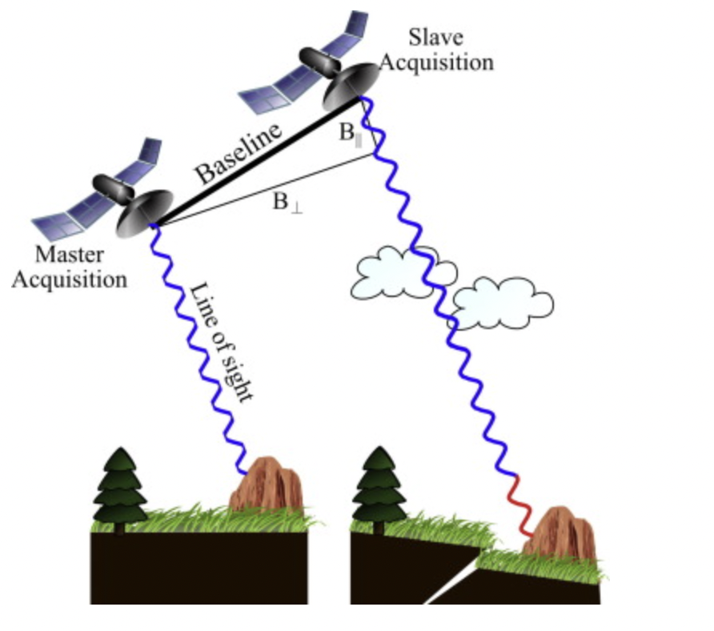
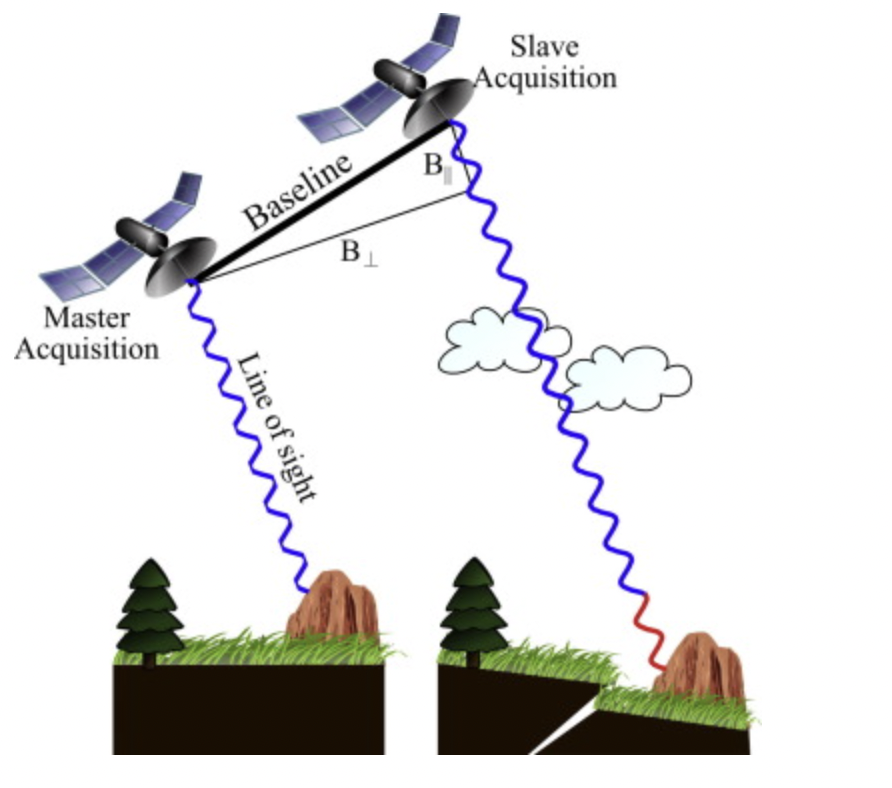

knitr::include_graphics("figures/w4-InSAR.png")
The city I chose is the capital of Indonesia, Jakarta. Jakarta is one of the most densely populated cities in the world. The city is facing many challenges, including rapid urbanization, traffic congestion, air pollution, land subsidence due to falling water tables (25cm per year), and severe flood risk. These The problem not only threatens the sustainable development of cities, but also affects the quality of life of residents.
Among them, the most serious problem is subsidence caused by rising sea levels, Jakarta is located on the northwest coast of Java, Indonesia. Parts of the city are built on swampland. This geological structure itself is relatively prone to subsidence. In addition, rising sea levels caused by global warming have exacerbated Jakarta’s subsidence problem, especially in coastal areas, which face greater risks of flooding. Some human factors also lead to ground subsidence. First, huge amounts of underground water pumping, primarily for residential, commercial and industrial water use, became an uncontrolled activity (Colven, 2020). Second, rapid urban expansion and large-scale construction projects have increased ground pressure, especially in swamps and soft soil. Third, the system has insufficient drainage, such as frequent rainfall that prevents ground moisture from draining away.
More details are in the video below.
In order to solve the subsidence problem in Jakarta, the Indonesian government and local agencies are taking a series of measures: Restrict groundwater extraction: Adopt laws and policies to limit illegal groundwater extraction and promote the use of alternative water sources, such as surface water and recycled water. Build seawalls and locks: Build large-scale seawall and lock projects to control seawater intrusion and mitigate the effects of flooding. Improve urban drainage systems: Improve and expand urban drainage systems to increase their ability to handle rainfall and flooding. Sustainable urban planning: Promote green building and sustainable urban planning concepts to reduce negative impacts on the environment and address the challenges posed by land subsidence.
Some predictions indicate that Jakarta will completely sink by 2050. Therefore, the government and relevant departments should continue to speed up the pace and actively respond. The next section: “Application” will talk about the specific application of remote sensing technology in sea level rise and ground subsidence.
In the case of Indonesia, especially Jakarta, remote sensing technologies (including InSAR and GNSS) are often used to help study land subsidence problems in low-lying coastal areas (Andreas et al., 2020), through geological surveys (such as leveling, global Navigation Satellite System (GNSS) and Synthetic Aperture Radar Interferometry (InSAR)), which can identify annual subsidence rates. The authors analyze time series of remote sensing data such as Google Earth or Landsat image archives, combined with land subsidence measurements and groundwater monitoring point data, as well as the mentioned statistical data to identify land subsidence areas, coastal land subsidence affected areas, potential seawater intrusion and aquifers method of damage.
Remote sensing technology plays an important role in helping to deal with land subsidence. It can provide effective detection and analysis of all aspects. First, synthetic aperture radar (SAR) technology can provide high-resolution surface deformation images to help identify and monitor ground subsidence areas. Interferometric Synthetic Aperture Radar (InSAR) is a remote sensing technology used to monitor surface deformation. It can accurately detect small changes in the surface such as land subsidence, landslides and post-earthquake deformation. InSAR technology analyzes tiny deformations on the ground through images acquired by synthetic aperture radar (SAR). InSAR data allows for time series analysis, which has become an important tool for detecting, measuring, and analyzing displacements on the Earth’s surface (Osmanoğlu et al., 2016). In addition, SAR measurements include both amplitude and phase observations. Amplitude refers to the intensity of backscattered electromagnetic waves, which is related to the shape, direction and electrical characteristics of the target. The phase reflects the change of the wave, but it is difficult to accurately obtain the total number of distance or wavelength. By comparing the phase changes in the two SAR measurements, we can detect the small changes that occurred between the two imaging times. This method is called InSAR (Osmanoğlu et al., 2016). The following figure illustrates the basic observable phase of a typical InSAR measurement.
knitr::include_graphics("figures/w4-InSAR.png")
figure1: Schematic explaining repeated pass interferometry (Osmanoğlu et al., 2016)
In this study, Osmanoğlu et al. (2016) used InSAR data time series analysis to compare the performance of four different algorithms (PSI, SBAS, SqueeSAR, StaMPS) in dealing with land subsidence monitoring in Mexico City. The study found that despite the high ground subsidence rate in Mexico City, the four algorithms all obtained similar settlement rates and deformation patterns, but the StaMPS method gave a lower settlement rate. In addition, the theory of combining time series analysis with phase unwrapping can provide potential technical and computational advantages for analyzing InSAR observations in three dimensions (two space and one time).
According to Ma et al. (2019) for the study of land subsidence in the Guangdong-Hong Kong-Macao Greater Bay Area (GBA) in China, we can determine that single-sensor synthetic aperture radar (SAR) images have a smaller coverage area and lower resolution, due to Sediments in the GBA are widely distributed, so SAR is not suitable for complete monitoring of the GBA. Therefore, in their study, the authors used the MT-InSAR method, using a combination of Sentinel-1 (S1), COSMO-SkyMed (CSK), and TerraSAR-X (TSX) images to reveal the multiscale subsidence of the GBA. Recognizing the advantages of MT-InSAR, several studies have applied it to monitor subsidence-prone bay/delta regions around the world.
The first article mainly discusses the application of time series analysis of InSAR data in monitoring and measuring earth surface deformation. The article discusses the need for phase unwrapping to obtain meaningful results due to the large surface variability, and mentions several different algorithms developed for this purpose. Although these algorithms are based on different models, they can all produce first-order deformation rates and can be compared with each other. The article proposes that no single algorithm can provide optimal results in all situations, as each algorithm has its own unique advantages and disadvantages, and is discussed in the paper through measurements of sinking rates in Mexico City. The second article focuses on the multi-scale subsidence problem in the Guangdong-Hong Kong-Macau Greater Bay Area (GBA) and analyzes the main causes of subsidence in the region. This article uses Sentinel-1 (S1), COSMO-SkyMed (CSK) and TerraSAR-X (TSX) images, and uses a variety of SAR images to reveal the multi-scale subsidence phenomenon in the GBA area. In addition, the article specifically mentions two local subsidence cases and emphasizes that CSK data is superior to S1 data in some aspects, such as point density, height accuracy and fewer false alarms. Finally, the article summarizes the practicality of using multi-sensor SAR images for regional surveys and fine monitoring of local areas.
In summary, the second article focuses more on the methods and algorithms of InSAR data analysis, while the third one focuses more on the surface subsidence problem in a specific area (i.e. GBA), and uses multi-sensor SAR images for monitoring. Both articles discuss the application of InSAR technology in ground monitoring, but the focus and geographical scope are different.
Studying policy issues in Jakarta in this module introduced me to the many ways in which remote sensing data can be used to address urban environmental issues such as land subsidence. Exploring remote sensing technologies such as InSAR and GNSS through Jakarta’s land subsidence problem highlights the key role of technological advancement in environmental monitoring and urban planning. Gaining a deeper understanding of how these technologies can provide high-resolution images and data to effectively detect and analyze ground deformation has not only enhanced my understanding of land subsidence monitoring, but also expanded my knowledge of the application of these technologies in a broader context. Through detailed case studies comparing Mexico City and China’s Guangdong-Hong Kong-Macau Greater Bay Area, I learned how different InSAR data analysis algorithms and methods can be leveraged to address specific geographic and situational needs. The importance of choosing appropriate algorithms is a valuable lesson for any policy or environmental analysis. Furthermore, it is predicted that Jakarta may be completely submerged by 2050 if drastic measures are not taken, reminding us of the urgency needed when addressing environmental issues. This prompts us to consider the wider implications of urban policy and planning, the key importance of sustainable practices, and the delicate balance that must be struck between development and conservation.
Andreas, H., Abidin, H.Z., Sarsito, D.A. and Pradipta, D. (2020). Remotes sensing capabilities on land subsidence and coastal water hazard and disaster studies. IOP Conference Series: Earth and Environmental Science, 500(1), p.012036. doi:https://doi.org/10.1088/1755-1315/500/1/012036.
Colven, E. (2020). Subterranean infrastructures in a sinking city: the politics of visibility in Jakarta. Critical Asian Studies, 52(3), pp.311–331. doi:https://doi.org/10.1080/14672715.2020.1793210.
Ma, P., Wang, W., Zhang, B., Wang, J., Shi, G., Huang, G., Chen, F., Jiang, L. and Lin, H. (2019). Remotely sensing large- and small-scale ground subsidence: A case study of the Guangdong–Hong Kong–Macao Greater Bay Area of China. Remote Sensing of Environment, 232, p.111282. doi:https://doi.org/10.1016/j.rse.2019.111282.
Osmanoğlu, B., Sunar, F., Wdowinski, S. and Cabral-Cano, E. (2016). Time series analysis of InSAR data: Methods and trends. ISPRS Journal of Photogrammetry and Remote Sensing, 115, pp.90–102. doi:https://doi.org/10.1016/j.isprsjprs.2015.10.003.